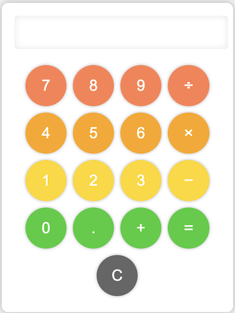

Computer Science Projects
I designed and implemented a to-do list GUI application using Java that enables users to create, manage, and prioritize their tasks. The application features a clean and intuitive interface with the ability to add, edit, and delete tasks. Completed tasks are automatically struck through and moved to the bottom of the list, allowing users to focus on their remaining tasks.

An interactive website for Sunnah Circle Institute, a non-profit organization focused on Islamic education. The website features registration forms, course materials, and community engagement tools. This required a strong attention to detail, basic knowledge of HTML, and collaboration with the client to ensure the website aligned with their vision and goals. This website successfully provides the organization with a dynamic online platform to engage with their community.

A simple implementation of Tic Tac Toe. The game is played on a 3x3 board, where two players take turns marking a spot with their symbol (X or O). The game is built using C programming language, with the help of basic input/output functions, control structures, and a 2D array to store the state of the board.

A web-based calculator that allows users to perform basic arithmetic calculations. The user interface features a display for showing input and output, as well as buttons for inputting numbers and mathematical operators. This also includes functionality for resetting the display and performing calculations. The project is built using HTML, CSS, and JavaScript.

This code generates a random password based on user-defined length and complexity level. The function generates a random password that contains lowercase letters, uppercase letters, digits, and/or special characters based on the selected complexity level. This code is useful for generating secure and random passwords for various applications.